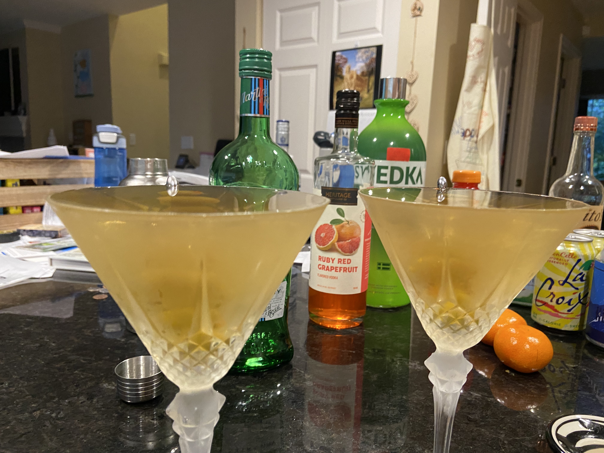

Dirty Martini for two

Ingredients
- 6 colossal pimento stuffed Spanish Queen olives
- 3 shots room temperature vodka (Tito's Handmade)
- 1.5 shots vermouth (Dolin Dry)
- 1 shot olive brine
- approximately 8 ice cubes
Steps
- Place 2 martini glasses and cocktail shaker in freezer, chill for 30 minutes
- Skewer 3 olives per skewer, place in freezer in glasses
- Combine remaining liquid ingredients in cocktail shaker, shake 3 times
- Add ice, shake vigorously for 20 seconds
- Pour into chilled glasses over olives, enjoy!
Home